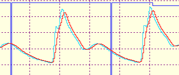
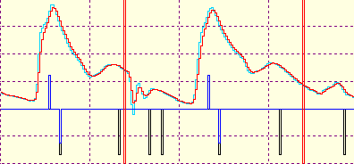
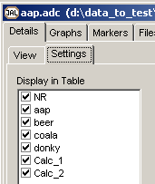

MediLab Scientific
Introduction
First of all, this module is not yet released, and for now it's not sure it will be released ever.
This module is a very powerful data-acquisition / data-analysis package, capable of sampling data through several AD converters, real-time (or off-line) data-analysis through embedded MatLab or embedded Python and of course data storage. Despite it's enormous flexibility (due to the embedded scripting and templates), it's very-very simple in it's use. Scripting is even further enhanced by a pre-processor, letting you do complex analysis, even without any knowledge of Python or MatLab. Let's first take a look at the total screen, where the view is set to show as much as possible (During normal operation, normally the control tree will be hidden).
If this all sounds too magic, you might want to watch this video: ...\medilab.avi (.. minutes, .. MB). Due to the low frame rate, signals don't appear as fluently as in real-time).
A. The main graphical view, capable of showing both real-time signals and calculated signals. The display has click-able upper and lower bounds and time-base. With calipers you can do also manual measurements. The signals in the above graphical screen, shows a signals sampled at 100 Hz, arterial blood-pressure (blue), Electro-Cardio-Gram (sea-green), with embedded MatLab calculated systolic pressure (red). Notice that the calculated signals are automatically delayed, so the time relation between sampled and calculated data is fully compensated. For the future we're considering to add multiple clip-able regions.
B. The main numerical view, the only thing the user has to do is to select the signals that should be visible in the numerical window, all the rest is done fully automatically by the program.
C. The graphical time-base shows 1 selected signal over the total acquisition time. The compression is either done in min-max mode or in mean-SD mode, which can be toggled by clicking on the signal name. With a characteristic signal this gives a powerful tool to locate and select a certain part in the recorded signals and even gives the possibility to look-back during recording (see also F). In this window also the markers are shown.
D. The control tree, with edit and full drag and drop facilities, is completely build up by the user !! The items in the tree are all buttons, performing real active tasks. With the builtin and very easy extendible templates, you can build this custom tree within a minute !! Of course the control tree is part of the measurement configuration and therefor stored, so it can be reused in future experiments.
E. Tabbed pages for additional information, this feature is very premature.
F. Recording line, showing which part of the acquisition is recorded (green is recorded, red is not recorded). Clicking on this line, enables you to look back in the recording, while acquisition and storing of the sampled signals continuous normally.
G. The status-bar, where all colored fields are action buttons. Because this status-bar contains the most important buttons, you normally don't need to make the control tree visible.
Control Tree
|
The top item is the main Python or MatLab script, used for analysis. blue icon: the signal is shown both in the graphical and in the numerical window red icon: the signal is shown only in the graphical window green icon: the signal is shown only in the numerical window yellow icon: the signal is not shown at all (but is still recorded) Clicking or pressing the Enter key, toggles the visibility of the signals through the above mentioned 4 states. Blue signals names are the real signals, Red signals names are calculated signals At this moment the units in the signals (if specified), override the units from the Python / MatLab script file, but I'm not sure yet what the best solution is. |
MatLab / Python Scripting
Again the magic word is templates.
Future Plans
Main Signal Window
Total Recording Window
In the total recording window, one pre-selected signal will be shown, over the total recording time. The signal is always autoscaled and is displayed with min-max or stripchart drawing. Everytime the signal reaches the end of the time window, the compression of the signal is doubled.
Another feature of the total recording window, is that you can look back during recording, by simply clicking at the right position in the window.
Settings Tree
Amplitude Settings
The amplitude settings can be used for each individual signal, and also for all selected channels.
The range, upper and lower bound can be set to an absolute value, by using the equal sign.
Upper and Lower bound can also be changed in a relative way, by +,-,/,* followed by an integer value.
AutoScale_On turns the auto-scaling on and resets the conditions (new max and min will be determined). If Auto-Scaling is on, it will continuously work and update the range settings at the end of the display (without resetting the min, max values). AutoScale_Off turns the auto-scaling off.
|
Sets Range limits, but doesn't change AC/DC setting Sets DC and Range Sets AC and Range Sets time-constant of AC Sets AC |
Time Axis
The time axis is defined by 2 parameters, the time/division and the number of divisions (it doesn't matter if the grid is visible or not). Also realize that the erase-block has a width of 1 division, therefor it's not advised to set the number of divisions below 5. The word "sec" in the tree below is optional and may be omitted.
Grid Settings
Grid Visibility is a toggle switch that changes between Grid_Hide and Grid_Visible.
Grid Style is a toggle switch that changes between Grid_Style_Solid and Grid_Style_Dot.
Calibration
By pressing calibration, the window shown below pops up. Now you can edit the 4 edit-boxes to get the right 2-points calibration. A more practical way is to offer first the low calibration value and just click on the left vertical bar, or left on the horizontal bar, so the actual ADC value is transported to the upper edit fields. The same yields for the right upper edit field. Increasing the Low Pass filter can stabilize the reading in case of noisy signals.
Signal Templates
|
The templates section of the action tree, contains actions sets for all kinds of signals, completely configured by the user. The templates section is NOT part of the ADC protocol, but is part of JALcc and therefor is also stored in a plain textfile "JALcc_adc_templates.txt" in the root directory. The templates can be created in the active ADC protocol or with a simple ASCII editor. Here an example of the templates file: ==FinaPres [mmHg] Color Calibration ==ECG [mV] Color Calibration AC = -2 .. 2 AC = -5 .. 5 AC = -10 .. 10 AC 5 sec AutoScale_On AutoScale_Off |
MatLab PreProcessor
Embedded MatLab
Creating a new MatLab (real-time) calculating function is very easy through the templates. E.g. the complete skeleton, including IO-section, initialization section and procedure section can be inserted from the templates with just 1 click. An embedded MatLab file can contain the following sections:
ADC section
The first part of a data-acquisition program should always be the ADC part (even in playback), defining the type of ADC-converter and the used ADC-channels. In most cases there is only 1 ADC-converter connected to the PC, in which case it might be a good idea to include the ADC section into the main-template.
By attaching a unique name (case-sensitive) to an ADC-channel of the ADC-converter (e.g. ECG to ADC-channel 2 in the figure below), the signal is made available for displaying, calculations and recording. The numbering of the ADC-channels is human-like, i.e. they starts at "1". Channels that are not assigned to a signal name, like ADC-channel 3 in the figure below, are not available, nor for displaying, nor for calculations, nor for recording. Depending on the type of ADC-converter, intermediate ADC-channels that are not connected may or may be not transported to the program, but for the user this doesn't make any difference (except for speed issues with many channels and high sample rates), the user always use the signals by their unique name.
For your own convenience, it's allowed to remove the lines with not connected ADC-channels.
Once a recording has started, changes in this part of the code has no effect, until the file is completely restarted.
IO section
The main IO-section is defined by a block as shown below. After this block is inserted from the templates, connect the input pins, by giving them a name of a real existing signal. (This action performs 2 tasks, the existing signal will be fed to the MatLab program, and these signals can now be used for calculations within the MatLab module). Later on you can connect signals to the output pins.
main section
Here the actual calculations can be written, which in most cases is just a matter of inserting one or more functions from the template window and connecting the input pins, by typing the correct signal names.
Below an example where a Blood Pressure analysis function is inserted. The only action is to connect the input signal and if needed you can change the clipping values of some the output signals.
Initialization section
The initialization section is automatically included, and executes some initial tasks once. In general you don't have to change anything here, but for some situations you could add your own initialization commands here.
String Section
Interactive Section
Procedure section
Not yet implemented. The idea here is that you're able to write procedures in the main file, without the necessity of using many different files.
Interactive Function
An interactive function is basically a normal MatLab function, but it has an extra user interface in which the user can graphical correct one or more calculated properties. Look at the next example:
MatLab has detected some trigger-points in the signals, in this case the rising edge (onset) of a blood-pressure signal, and MatLab has calculated the derivate of this rising edge, indicating the speed of the blood. In the lower figure, the blue line indicates this derivate and the speed is also given in human manner in one of the edit fields on the right. Now the user can move and rotate the blue line, which calls a special MatLab section, that will update the edit fields. Both the automatically calculated and manual corrected values of the fields will be exported.
The usage or call of this function is just like any normal function
To see how an interactive function should be created, look in the MatLab file "Demo_InterActive.m", which has some good documented code.
Embedded Python, technical details
Definition of global vars
initialization
Each sample
At end of buffer
Interaktive part
....
Init script
test1_next.py
Embedded MatLab, technical details
The input signals are transported through the 2-dimensional array IOI ( 1:Nsignal+1, 1:Signal_length).
The output signals are transported through the 2-dimensional array IOO ( 1:Nsignal+1, 1:Signal_length).
The last input signal IOI (Nsignal+1, 1:Signal_length) is used to transport all kind of settings
The top line of a function call, will cause the function to be included in the main section. So in the example below, in the main section the next line will be added (note that all function names, included in this way, will be preceeded by "JALcc_":
Ctrl-Enter on a procedure name, will try to open the file in the editor. The file is searched in the main MatLab directory first, then in the default MatLab library directory (...). The procedure name will be preceeded by "JALcc_" to form the filename. The file must contain a plain MatLab script, no function definitions.
Connecting a name to a function output signal, generates a new array with that name, which can be used in further calculations. In general there's no need for doing this, (it consumes extra time and memory) because you can use the signal "BP_Sys" directly in further calculations.
Real-Time MatLab

Moving Average over a length of 5
First order Low Pass at 8 Hz, history length 50
First order Low Pass at 8 Hz, history length 5
First order Low Pass at 8 Hz, history length 10
The average sloop method on the raw signal works better than the diff function on the filtered signal
|
top: Bloodpressure Filtered Bloodpressure (first order 8 Hz, history length 10) bottom: red=average sloop method, length 3*3 blue=simply "diff" on the filtered bloodpressure |
|
top: Bloodpressure Filtered Bloodpressure (first order 8 Hz, history length 10) bottom: red=average sloop method, length 3*2 blue=simply "diff" on the filtered bloodpressure |
|
top: Bloodpressure Filtered Bloodpressure (first order 8 Hz, history length 10) bottom: red = average sloop method, length 3*3 blue = BP > treshold black = derivate > 0 |
|
top: Bloodpressure Filtered Bloodpressure (first order 8 Hz, history length 10) bottom: red = average sloop method, length 3*3 blue = BP > treshold black = derivate > 0 Now the black puls should be "removed" if there's no blue puls in. And the moment of BP top is determined by the falling edge of a good black puls. |
|
 |
Skipping the wrong peaks (black ones without a blue inlay). The positive blue peak indicates the treshold passing of the filtered BloodPressure. The negative blue peak is the zerocrossing of the derivate of the BloodPressure, or in other words the peak location of the BloodPressure. |
Matlab debugging
The MatLab command window can be shown by ..
The MatLab workspace can be shown by ...
The editor has the ability (through the RM-menu) to comment in/out complete blocks of code.
When there's an error in the MatLab code, every block, an error beep will sound. As soon as an error in the MatLab script is encountered, the script will be aborted, but the same script will be send to MatLab each block.
A few important notes:
Delphi Debug File
By clicking in the display window a "permanent" cursor-line appears (the thick fuchsia line in the figure below). Now the numerical values on the right don't display the actual value, but the values at the cursor-line. The cursor-line can be removed by dragging the cursor-line out of the image.
After the cursor-line is placed, it can also be moved with the arrow-left and arrow-right keys, and with the PageUp, PageDown keys (step 5 samples).

ADC-types
|
Type |
Remarks |
|
0, Random Signals |
|
|
1, FysioFlex Files |
|
|
2, Delphi Debug File |
answer file: second line contains the signal names |
|
3, FysioFex-2,3 |
|
|
4, NI DAQmx |
|
ADC-Communication
The main program and MidacADC.exe should be in the same directory.NONONO
|
Main Program |
MidacADC |
|
Launches MidacADC.exe |
|
|
Creates a file MIDADC_START.TXT, containing: ADCType/Nchannels/SampFreq/MaxFileSize e.g. 1/5/1000/30000 |
|
|
Waits till a nonzero length file MIDADC_START.TXT, then starts AD-conversion and creates a file MIDADC_ANSWER.TXT containing the actual settings ADCType/Nchannels/SampFreq/MaxFileSize e.g. 1/4/100 In this case the ADC could only support 4 of the 5 channels and the nearest sample frequency is 100 Hz |
|
|
The ADC now starts writing the samples in the files MIDADC1.DAT and MIDADC2.DAT |
|
|
Main Program can read the data from the files, and should jump to the other file when MaxFileSize is reached. |
|
|
When the main program wants to stop acquisition or change the settings, just remove the file MIDADC_START.TXT. |
|
|
As soon as the MIDADC_START.TXT is missing, sampling is stopped and the file MIDADC_ANSWER.TXT is removed. |
|
|
When completely finished, a file MIDADC_KILL.TXT should be created. |
|
|
When the KILL file is detected, sampling is stopped (if it was running), the ANSWER file is removed and the KILL file is removed. DAT files are released. |
|
|
If wanted (e.g. for a fresh restart), the main program can wait until KILL (and ANSWER) file has vanished. |